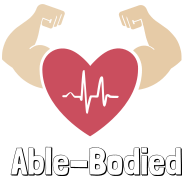
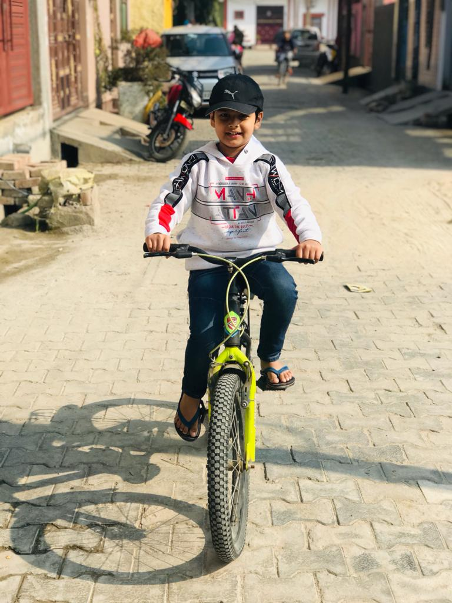

We Care For Your
Health Every Moment
MISSION HEALTH
“To serve the community by making people cognizant of their physical and mental wellness.”


ABOUT
This is our website named “Able-Bodied”. It is all about healthcare.
We made this website to serve the community by making people cognizant of their physical and mental
wellness and to encourage people for physical workout to take care of their and their family’s
health.
Healthy people of a country will accumulate growth of the country as healthier people are more
economically productive. Better health also leads to an increase in savings rates— because healthier
people expect to live longer and are naturally more concerned with their future financial needs.
~ And that is what we want...
BALANCED DIET
WHAT IS IT?
A balanced diet contains all the food items necessary for keeping body healthy and fit in right proportion. This diet completes the requirement of calories, proteins, minerals, vitamins and different nutrients.
WHAT ARE THE COMPONENTS?
Components of a balanced diet -
• Carbohydrates are the body's source of energy.
• They act as fuel for body’s muscles.
• Carbohydrates are mainly found in plant foods.
• They are found in foods, which are good for you (vegetables) and ones, which are not
(doughnuts).
• Unprocessed fruits and vegetables are well known for their nutrient content. Some are even
considered superfoods because of it.
• We get carbohydrates from foods like bread, beans, milk, popcorn, potatoes, cookies,
spaghetti, soft drinks, corn, cherry pie, etc.
• Not getting enough carbohydrates can cause problems. Without sufficient fuel, the body gets no energy. This may cause mental or physical weakness.
• Protein is a part of every cell in the body. It helps the body to build and repair cells
and
tissues.
• Protein is essential for growth and development.
• Proteins are found in- seafood, lean meats and poultry, eggs, nuts, seeds, soy products,
pulses etc.
• Protein deficiency can lead to malnutrition, such as kwashiorkor and marasmus, which can
be
life threatening.
• Replace regular snacks with high protein snacks, such as nuts, roasted chickpeas, and peanut butter to get enough protein every day.

• Carbohydrates are the body's source of energy.
• Fat is an important part of a healthy diet.
• Fat is essential to eat, though it is also harmful to eat too much.
• They help to protect organs and help to keep body warm.
• They also work for lubrication of joints as well as veins.
• Some examples of foods that contain fats are butter, oil, nuts, meat, fish, and some dairy
products.

• Vitamins are substances that a body needs to grow and develop.
• There are 13 vitamins.
• Each vitamin plays an essential role.
• We should eat different foods to get enough quantity of vitamins needed by our body.
• They keep our bones, teeth and gums healthy.
• Plants are the main source of vitamins. Although, some vitamins get destroyed by cooking.
Other examples are- yellow fruits, lemon, Indian gooseberry, milk, tomato, etc.
| Vitamins | Sources | Functions | Deficiency Diseases And Their Symptoms |
| Vitamin A | Cod liver oil, milk, butter, ghee, yellow vegetables and fruits | Needed for healthy eyes, skin and tissues | Night blindness and dryness of skin |
| Vitamin B | Wheat, rice, milk, green leafy vegetables, sprouted pulses | Needed for making muscles strong, getting energy to do work | Beri-Beri, weak muscles and weakness |
| Vitamin C | Indian gooseberries, green chillies, citrus fruits | Needed for healthy bones and teeth | Scurvy, spongy and bleeding gums |
| Vitamin D | Milk and milk products, eggs, cod-liver oil, sunlight | Needed for healthy bones and teeth | Rickets, curved and and deformed bones, bow legs |
| Vitamin E | Vegetable oils, green vegetables, tomato | Smooth functioning of reproductive system | Sterility |
| Vitamin K | Green leafy vegetables | Helps in blood clotting | Prolong and profused bleeding due to delayed blood clotting |
• Minerals are the nutrients, which are required by our body to develop and function
normally.
• Minerals help in keeping our bones, muscles, heart, and brain healthy.
• They also help our body to grow, develop, and stay healthy.
• Mineral deficiencies can lead to a variety of health problems, such as weak bones,
fatigue, or
a decreased immune system.
• Sources of minerals are- meat, cereals, fish, milk, fruits and vegetable, nuts, etc.

• Water is a tasteless, odorless and transparent fluid.
• It helps in removal of waste from our body.
• Blood contains a large amount of water.
• Drinking impure water can let diseases like diarrhea, cholera, hepatitis, etc. enter our
body.
• Inadequate intake of water may lead to reduction of amount of hemoglobin in body.
• Roughage is the portion of plant foods, such as whole grains, nuts, seeds, legumes,
fruits,
and vegetables that a body cannot digest.
• Roughage helps in decreasing constipation, and feeding beneficial gut bacteria.
• Roughage sources are- lentils, chickpeas, pears, avocado, apple, corn, almonds, oats,
kidney
beans, etc.
WHY IS IT IMPORTANT?
Water is essential for all vital processes of the body. It forms 70 per cent of our body weight. It is essential for all reactions taking place in the cells of our body. It helps in the removal of waste products, in the form or urine, from our body. Water helps in maintaining a uniform body temperature by distributing heat. In summer, our body produces sweat which, on evaporation from the skin, helps to keep the body cool.
What ARE THE EFFECTS?
When we eat a balanced diet including variety of all nutrients, we reduce the risk of getting sick. It boosts our immunity as well to fight from certain communicable and non-communicable diseases.


PHYSICAL FITNESS
EXERCISES
HABITS TO FOLLOW
Salad

Cooking
2. The food items which are hard to digest should be cooked well
because
it makes the food easy to digest. Cooking makes the food softer and tastier. It also
improves the fragrance of the food, as well as it kills the germs present in the
vegetables.
Drinking Plenty Water

Washing Hands
Our hands consist of many germs, so we should always wash our hands
before and after the meals.

Keeping Food Items Covered
5. We should not eat uncovered food items because it may get exposed
with
flies and germs. It is because that it may cause diseases like diarrhoea, food
poisoning, stomach ache etc.

Washing Food Items
6. Always wash fruits and vegetables before peeling and cutting.